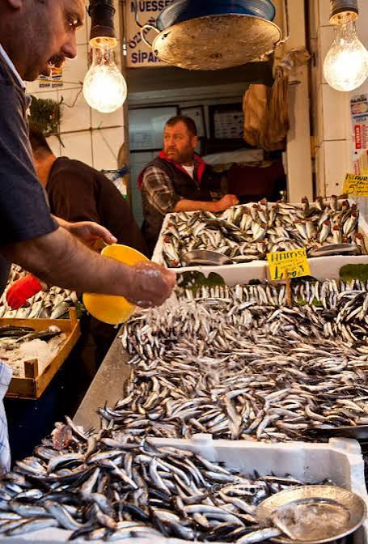

Aşağıya hamsilerin bir temsilini gösteren örnek bir görsel eklenmiştir:

Bu web sitesi, Hamsiler hakkında gizemli ve büyüleyici dünyasına adım atmak isteyenler için hazırlanmış çok basit ve anlaşılır bir kaynaktır. Aşağıdaki içindekiler tablosunu kullanarak doğrudan ilgili bölüme gidebilir ve sayfa içindeki bağlantılarla kolayca gezinebilirsiniz.
Hamsi (Engraulis encrasicolus), özellikle Karadeniz başta olmak üzere Akdeniz ve Marmara’da da yaşayan, küçük pelajik (açık deniz) bir balık türüdür. Sürüler halinde yaşar. Küçük boyuna rağmen besin değeri açısından pek çok büyük balıktan çok daha zengindir. Karadeniz kültüründe sadece bir besin değil, adeta bir yaşam tarzı ve sanatın, müziğin ilham kaynağıdır.
Aşağıya hamsilerin bir temsilini gösteren örnek bir görsel eklenmiştir:
Hamsi, omega-3 yağ asitleri (EPA ve DHA) bakımından inanılmaz zengindir. Bu sağlıklı yağlar, kötü kolesterolü (LDL) ve trigliseritleri düşürmeye, iyi kolesterolü (HDL) yükseltmeye yardımcı olur. Kan basıncını dengeler ve kalp krizi riskini azaltır.
İçerdiği yüksek orandaki omega-3 yağ asitleri beyin hücrelerinin yapısını korur. Özellikle çocuklarda zeka gelişimini desteklerken, yetişkinlerde hafızayı güçlendirir ve ilerleyen yaşlarda Alzheimer riskini azaltabilir.
Hamside bulunan A vitamini ve omega-3 yağ asitleri, göz sağlığının korunmasında kritik rol oynar. Özellikle yaşa bağlı makula dejenerasyonuna karşı koruma sağlar.
Hamsi kılçığıyla birlikte tüketilebildiği için mükemmel bir kalsiyum ve D vitamini kaynağıdır. Bu sayede kemik yoğunluğunu artırır ve osteoporoz riskini önler.
Cildin nem dengesini korur, yaşlanma belirtilerini geciktirir ve saç köklerini besler. Selenyum, çinko ve demir sayesinde bağışıklık sistemini güçlendirir.
Yüksek oranda demir ve B12 vitamini içerir. Bu bileşenler kırmızı kan hücrelerinin üretimini artırarak kansızlığı önler ve yorgunluk hissini azaltır.

Pişirme Yöntemi: Hamsinin faydalarından yararlanmak için buğulama, fırında veya ızgara tercih edilmelidir. Çok fazla mısır ununda ve bol kızgın yağda kızartıldığında kalori değeri artar.
Tazelik: Hamsi çabuk bozulabilen hassas bir balıktır. Gözlerinin canlı ve berrak olmasına dikkat edilmelidir.
Ağır Metal Durumu: Küçük bir balık olduğu için büyük balıklara kıyasla çok daha az cıva ve ağır metal biriktirir.
Mevsiminde taze taze tüketilen hamsi, sofralarınızdan eksik etmemeniz gereken bir deniz ürünüdür.